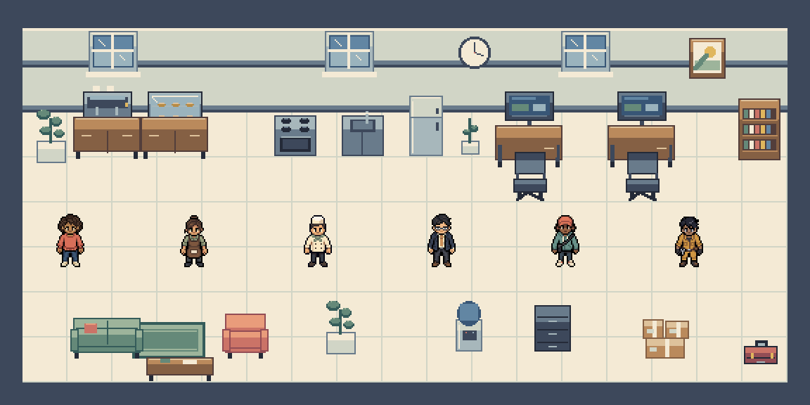
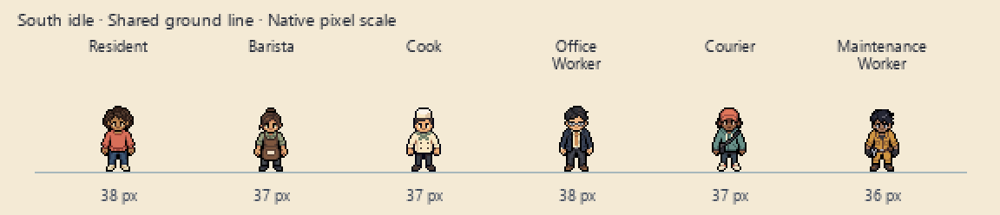

Modern Rooms & People
Six people. Three modern rooms. A café, apartment and workspace ready to furnish.
Play the Moving Showcase

In This Pack
6 Pro characters · 48 animation clips · 408 animation frames · 48 standing views · 32 props · 16 tiles.

Includes the completely rebuilt 38-pixel Resident, original PNGs, aligned sheets, timing and pivot metadata, and a Godot 4 sample.
Use the Assets
Character motion includes four-direction idle and walk. Standing turnarounds include eight directions. The Godot sample uses WASD or arrow keys to move, Tab to select a character and R to reset.
Furniture is decorative in the samples. Occupation actions and furniture collisions are outside this release.